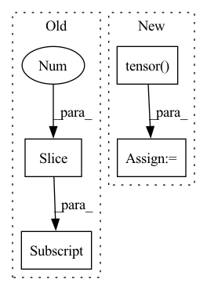

Pattern ID :17841
Before Change
size = (255 * buffer_[0].item()) + buffer_[1].item()
bytes_list = bytes(buffer_[2:size+2] .tolist())
result = pickle.loads(bytes_list)
return result
After Change
broadcast arbitrary data from root_rank to all nodes.
enc = pickle.dumps(data)
max_size = hvd.allgather(torch.tensor( [len(enc)]) .cuda()).max().item()
buffer_, enc_byte = _encode(enc, max_size)
hvd.broadcast_(buffer_, root_rank)
In pattern: SUPERPATTERN
Frequency: 4
Non-data size: 4
Instances Fragment ID: 58566236
Project Name: chenrocks/uniter
Commit Name: bb8926528e3783f339e8f4ae58ba6ff35ae6bc26
Time: 2020-08-06
Author: Yen-Chun.Chen@microsoft.com
File Name: utils/distributed.py
M Class Name: AnonimousClass
N Class Name: AnonimousClass
M Method Name: any_broadcast(2)
N Method Name: any_broadcast(3)
M Parent Class:
N Parent Class:
M File Name: utils/distributed.py
N File Name: utils/distributed.py
M Start Line: 184
M End Line: 205
N Start Line: 196
N End Line: 203
Before Change
module.register_buffer("idxs", idxs.to(module.weight.device))
// module.register_buffer("select_idxs", select_idxs.to(module.weight.device))
module.register_parameter("bf", torch.nn.Parameter(bias))
module.register_buffer("zeros", torch.zeros(1, 1, *shape[2:] , dtype=bias.dtype, device=module.weight.device))
setattr(module, "zero_cache", module.zeros)
setattr(module, "idxs_cache", module.idxs)
After Change
current += 1
else:
select_idxs.append(module.weight.shape[0])
select_idxs = torch.tensor( select_idxs)
module.register_buffer("idxs", idxs.to(module.weight.device))
module.register_buffer("select_idxs", select_idxs.to(module.weight.device))
module.register_parameter("bf", torch.nn.Parameter(bias)) Fragment ID: 58566223
Project Name: eidoslab/simplify
Commit Name: 20f2d560394960f91d131408660f14299acf9c1d
Time: 2021-07-08
Author: carlo.alberto.barbano@outlook.com
File Name: simplify/layers.py
M Class Name: BatchNormExpand
N Class Name: BatchNormExpand
M Method Name: from_bn(4)
N Method Name: from_bn(4)
M Parent Class: nn.BatchNorm2d
N Parent Class: nn.BatchNorm2d
M File Name: simplify/layers.py
N File Name: simplify/layers.py
M Start Line: 99
M End Line: 101
N Start Line: 87
N End Line: 98
Before Change
final_state = torch.tensor(next_state_lst[-1], dtype=torch.float)
R = 0.0 if done_lst[-1] else self.v(final_state).item()
td_target_lst = []
for reward in reward_lst[::-1] :
R = self.args["gamma"] * R + reward
td_target_lst.append([R])
td_target_lst.reverse()After Change
action = torch.tensor(action_lst)
reward = torch.tensor(reward_lst, dtype = torch.float).unsqueeze(-1)
next_state = torch.tensor(next_state_lst, dtype = torch.float)
done = torch.tensor( done_lst, dtype = torch.float) .unsqueeze(-1)
td = reward + (1 - done) * self.args["gamma"] * self.v(next_state)
if self.args["advantage"] == True : Fragment ID: 58566235
Project Name: seolhokim/distributedrl-pytorch-ray
Commit Name: 24173b188cfefde68f9b724d2c24ac5c6cbd722a
Time: 2021-06-05
Author: kilmya1@naver.com
File Name: agents/algorithms/actor_critic.py
M Class Name: ActorCritic
N Class Name: ActorCritic
M Method Name: compute_gradient(6)
N Method Name: compute_gradient(6)
M Parent Class: nn.Module
N Parent Class: nn.Module
M File Name: agents/algorithms/actor_critic.py
N File Name: agents/algorithms/actor_critic.py
M Start Line: 35
M End Line: 47
N Start Line: 31
N End Line: 39
Before Change
N_test = int(0.1 * data.shape[0])
data_test = data[-N_test:]
data = data[0:-N_test]
data_train = data[0:-N_test]
// Normalization
mu = data_train.mean(axis=0)
s = data_train.std(axis=0)After Change
// To tensor
data_train = torch.tensor(data_train)
data_validate = torch.tensor( data_validate)
data_test = torch.tensor(data_test)
return data_train, data_validate, data_test
Fragment ID: 58566225
Project Name: vincentstimper/resampled-base-flows
Commit Name: d131fe9a56eb2c670f3fe50d2a0d8ae4ea2628d9
Time: 2021-10-05
Author: vincent.stimper@gmail.com
File Name: larsflow/data.py
M Class Name: AnonimousClass
N Class Name: AnonimousClass
M Method Name: load_miniboone(1)
N Method Name: load_miniboone(1)
M Parent Class:
N Parent Class:
M File Name: larsflow/data.py
N File Name: larsflow/data.py
M Start Line: 38
M End Line: 49
N Start Line: 40
N End Line: 58